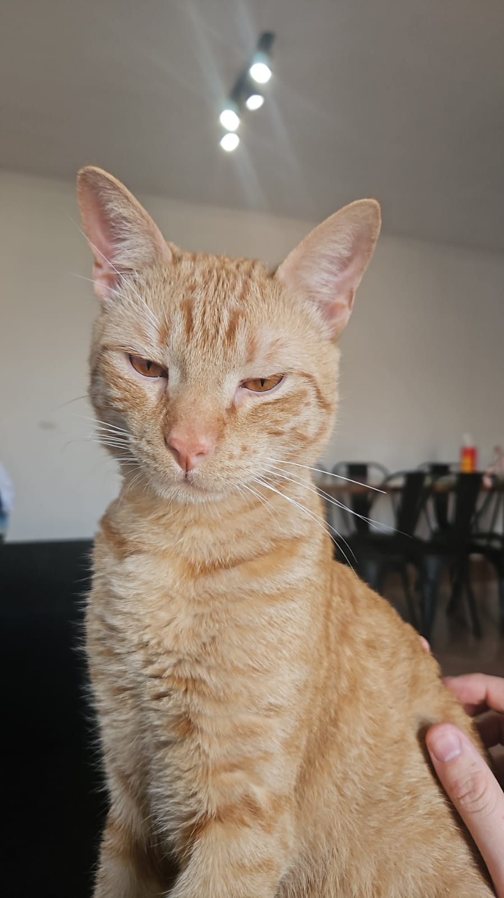

Genu es un gato naranja que llegó a nuestras vidas el 1 de enero de 2026, cuando tenía aproximadamente un mes y medio. Lo encontramos afuera de nuestro departamento, muerto de hambre... aunque nunca dejó de tener hambre.

Come absolutamente de todo: desde pan y polenta hasta pollo y carne. Si algo se puede comer, Genu probablemente ya lo está mirando fijamente.

Desde que llegó, cambió por completo la jerarquía de la casa. Pensábamos que lo habíamos adoptado, pero descubrimos que él nos adoptó a nosotros. Hoy tiene aproximadamente 9 meses y es oficialmente el dueño de la casa. Nosotros simplemente pagamos el alquiler.